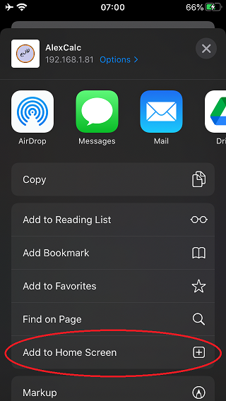

How to add a shortcut to AlexCalc to home screen on iOS
From the main AlexCalc page, in Safari, press the middle button (which I think is generally for "sharing"):

Scroll down and press "Add to Home Screen":
Note: if you followed these instructions from this page, edit the URL to point to the main AlexCalc page. Otherwise, your new shortcut will always point you to this help page.
This seems to cache it somewhat, but unfortunately it doesn't seem to stay downloaded forever. When I restarted my phone, I couldn't access it without turning wifi back on. If anyone knows how to make this a better experience, please let me know. (I would love to make an iOS app, but I haven't tried yet since my understanding is that you need a >$1000 macbook, and to pay a yearly developer fee.)